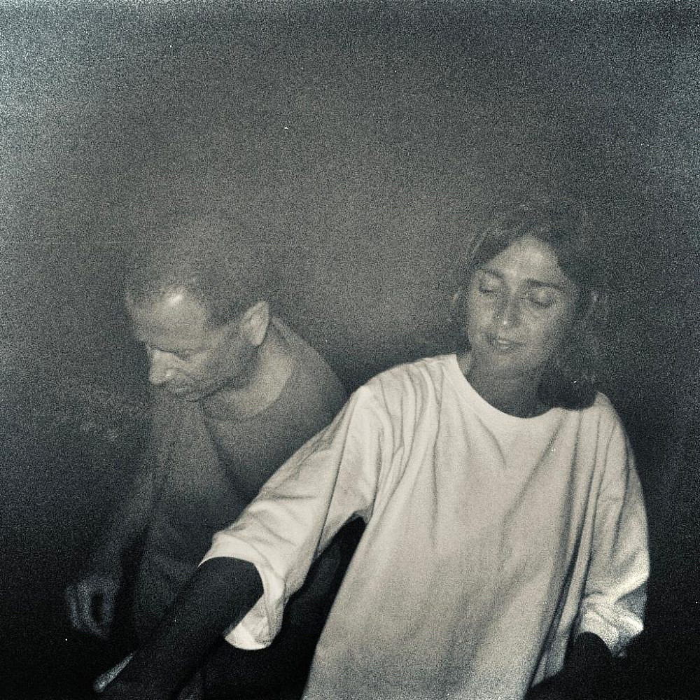
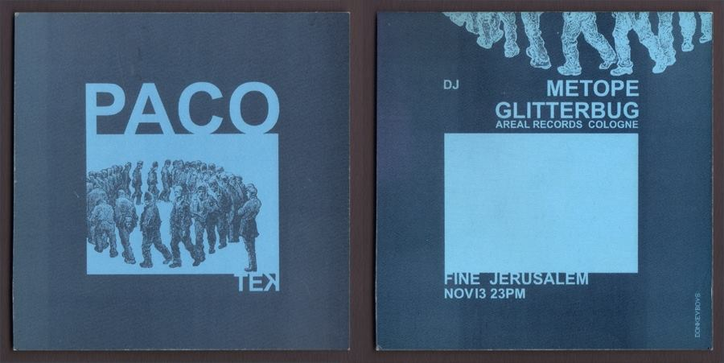
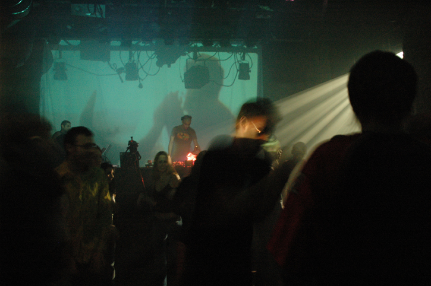

פאקוטק
אדם/קבוצה

פאקוטק הוא ליין מסיבות שהתחיל כסדרת רייבים בירושלים בשנת 2003. צחי סוזנה היה מחברי "טכנו ירושלים", גלגול של 100 מטר שהתרחש בין פירוק הקבוצה ההיא לתחילת פאקוטק. ב"טכנו ירושלים" היו גם דני ז'רז'בסקי ויריב ברנשטיין. ב־2003 אנה הלטה הייתה סטודנטית בבצלאל שהייתה בין המארגנים של רייב מתחרה באחד מאלה שלהם, שהתרחש במועד זהה. לא עבר זמן רב עד ששתי הקבוצות החלו לשתף פעולה.
צחי ואנה היו היחידים מחברי הקבוצות האלו שהמשיכו גם לאחר שהשאר התעייפו. הם ארגנו רייבים ותקלטו בהם, והשנים הבולטות בפעילותם היו 2003-2006. בין השאר ערכו מסיבות במתחם משרד החוץ הישן (היום משכנות האומה), החניון ברחוב כורש, בניין משרד התעשייה והמסחר הנטוש ברחוב אגרון (היום מלון וולדורף-אסטוריה), ב"מעבדה" בדרך חברון (עם אק דאק) ובמנהרה בגן סאקר. את חלקן המשטרה סגרה, למשל מסיבה בים המלח ב־2005. מספר המשתתפים באירועים שלהם סבב סביב 200-500 אנשים. כמו כן תקלטו במקומות מוסדרים כמו הסירה והקסטה.
המוזיקה הייתה בעיקר טכנו, אך מאופק ומינימליסטי יותר מזה שהיה מקובל ברייבים בשנים שקדמו להם. העיצוב גם הוא היה מינימליסטי וכלל שימוש במקרני שקופיות. פרט אחר שייחד אותם הוא שהקימו מראשית דרכם אתר אינטרנט שפרסם מידע על אירועים, תמונות ודברים אחרים שלא היו נפוצים בסצנת הרייבים של אז. בנוסף הם היו הראשונים בתחום הרייבים של ירושלים שהביאו אמנים מחו"ל כמעט באופן קבוע ויצרו מארג שקושר בין הסצינה בעיר למוקדים אחרים בעולם.

הפלאייר הראשון של פאקוטק, 2003
ב־2006 החלו לעשות אירועים בתדירות של פעם בחודש בצוללת הצהובה; הסאונד המקצועי במקום משך אותם. במקביל החלו לעשות אירועים בתל אביב, בהתחלה בלבונטין ולאחר מכן במקומות נוספים, עד שהשתקעו שם משנת 2010.
